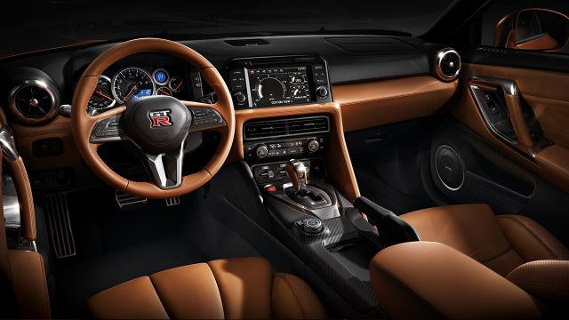
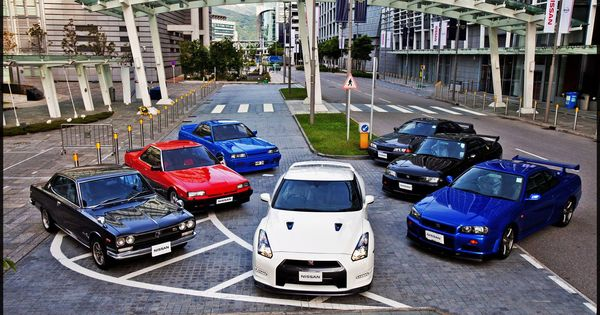
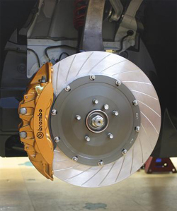
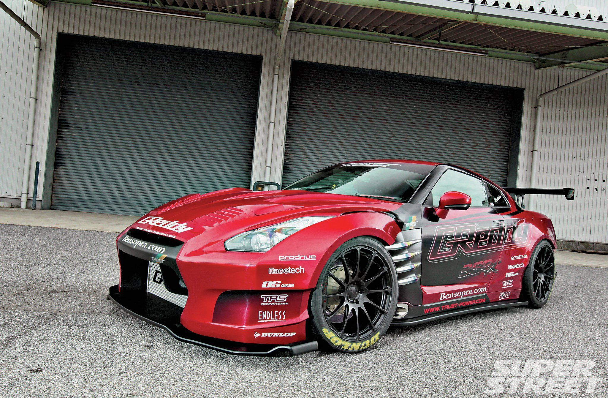

Nuevas características para 2017 Una vez más, el 2017 GT-R eleva la barra para un rendimiento final. En el interior, el GT-R da un gran paso adelante con un nuevo diseño que reduce la carga de trabajo del conductor, al tiempo que se acelera a un nuevo nivel de prima con materiales seleccionados a mano y hechos a mano. Aumente en mayor potencia, y una suspensión retuned para proporcionar un paseo más flexible mientras mejora la manipulación, y la exhilaración legendaria nunca ha parecido mejor
De principio a fin, cada motor GT-R es hecho a mano por su propio motor maestro-constructor En una "sala limpia" controlada por el clima. Cada V6 gemelo-turbo se monta con precisión a partir de peso ligero, altamente Piezas duraderas de aluminio y magnesio. Toma los estándares exigentes de los más talentosos y Dedicados constructores de motores para producir el motor que ha redefinido lo que un supercar puede ser. More information available here! 
Hay muchos tipos y diferentes modelos de este carro dependiendo del año pero siempre han sido carros fantásticos y además todo mundo los quiere. 
